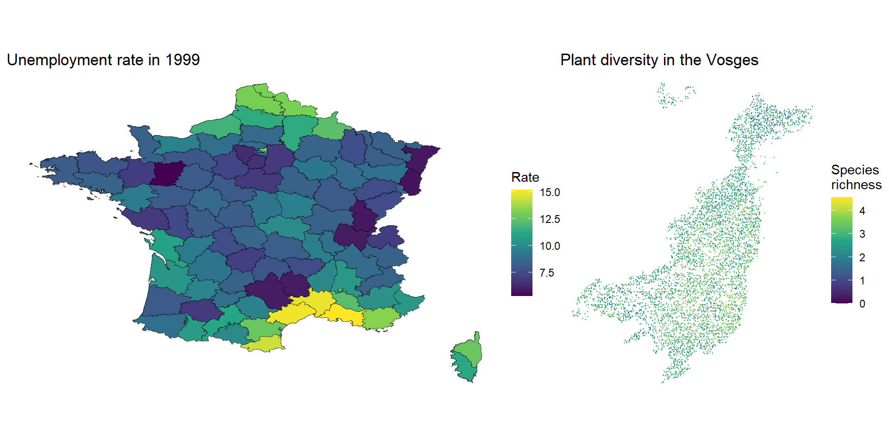
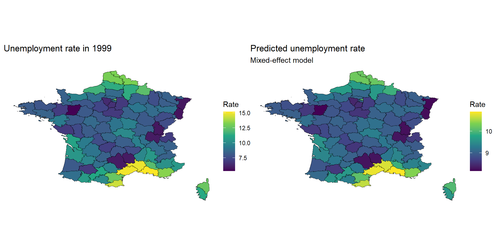
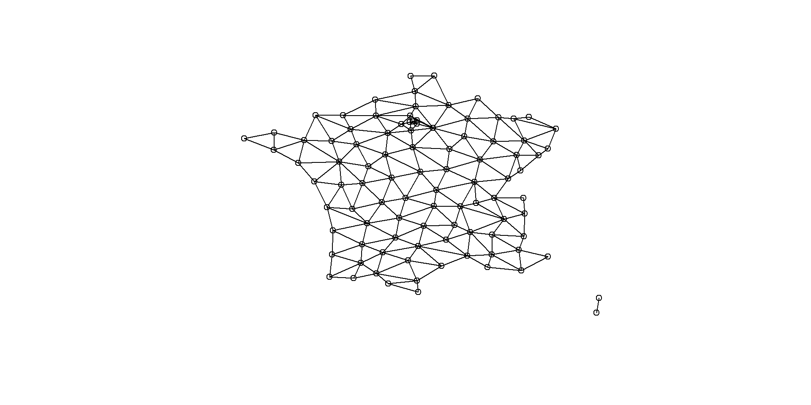
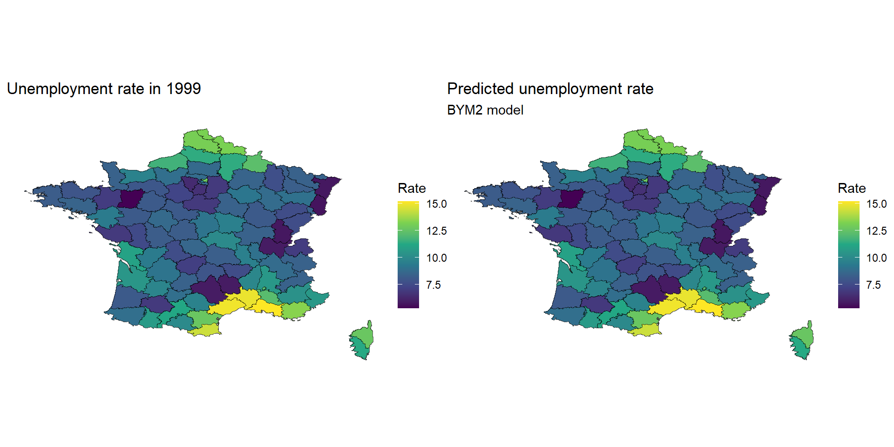
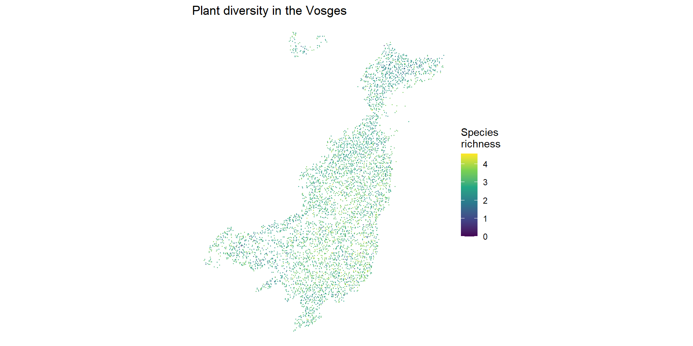
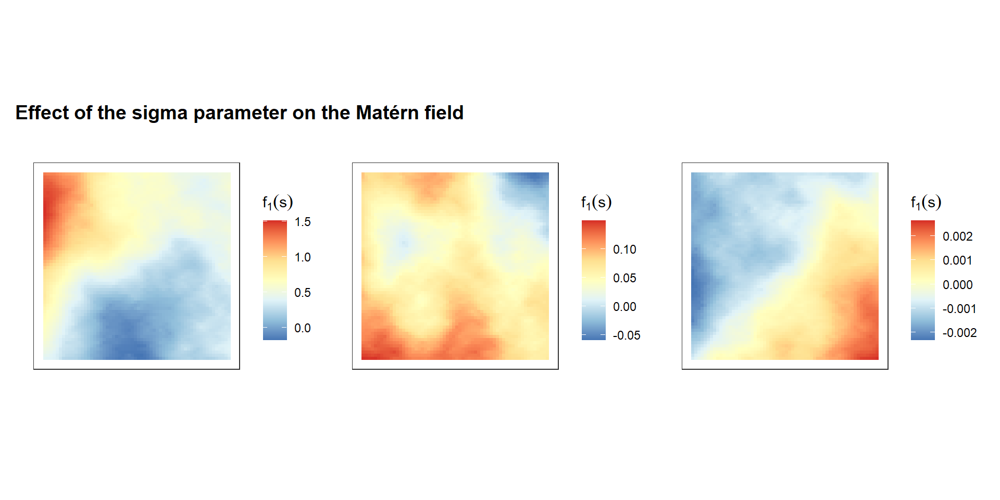
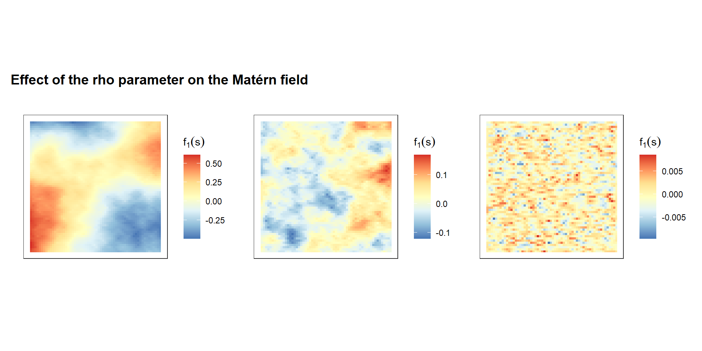
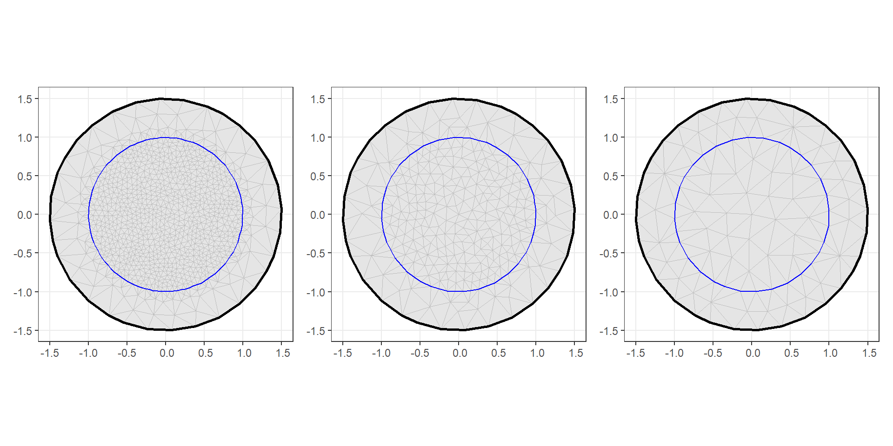
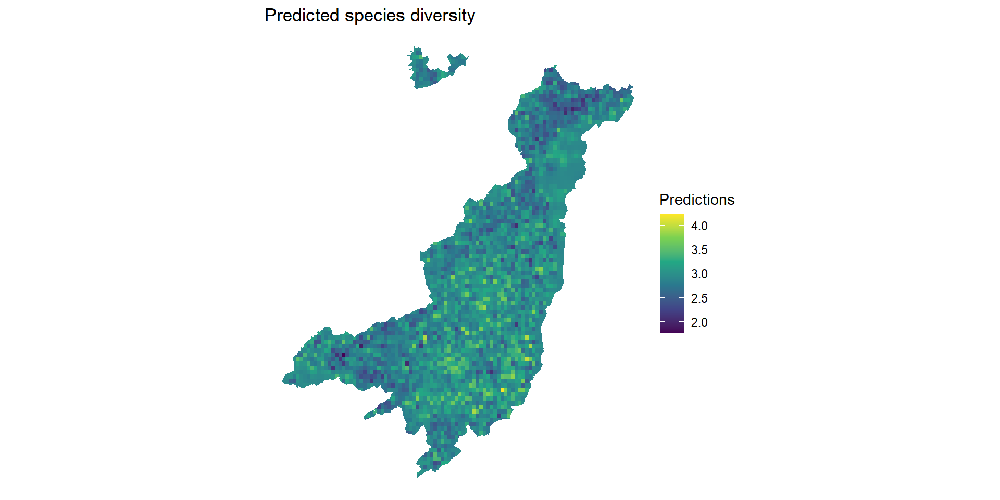

Lecture 3: Spatial structure
\[ \eta_i = \underbrace{\beta_0 + \beta_1 * X_i}_{\substack{\text{fixed} \\ \text{effects}}} + \underbrace{f_1(s_i)}_{\substack{\text{spatial} \\ \text{effect}}} + \underbrace{f_2(t_i)}_{\substack{\text{temporal} \\ \text{effect}}} + \underbrace{f_3(group_i)}_{\substack{\text{random} \\ \text{intercept}}} + ... \]
Spatial information can be encoded in various ways, for instance:

Do you see other ways?
We can fit non-spatially aware models to the unemployment departmental data like:
\[ unemployment_i \sim \mathcal{N}(\eta_i, \sigma_{\epsilon}²) \] \[ \eta_i = \beta_0 + f(department_i) \] \[ f(department_i) \sim \mathcal{N}(0, \sigma_{dep}²) \] And in R:
We can plot the model predictions:

What do you think?
Various model structure exists to consider the spatial structure from discrete spatial units.
All are based on an adjacency matrix between the units - whom is neighbors with whom:

A first model on areal data is the Besag model:
\[ unemployment_i \sim \mathcal{N}(\eta_i, \sigma_{\epsilon}²) \]
\[ \eta_i = \beta_0 + f(department_i) \]
\[ f(department_i) = f_i | f_{-i} \sim \mathcal{N}(\frac{1}{n_i}\sum_{j \sim i} f_j, \frac{\sigma_{u}²}{n_i}) \]
where \(n_i\) is the number of neighbours of area \(i\) and \(j \sim i\) means \(j\) is a neighbour of \(i\).
In plain language: the value of area \(i\) is the average of its neighbours, with uncertainty that decreases as it has more neighbours.
In inlabru such model can be fitted as follow:
Key properties:
The Besag-York-Mollié model adds an i.i.d. component on top of the Besag model:
\[ f(department_i) = \underbrace{u_i}_{\substack{\text{spatially} \\ \text{structured}}} + \underbrace{v_i}_{\text{unstructured}} \]
\[ u_i = BESAG; v_i \sim \mathcal{N}(0, \sigma_v²) \]
This separates two sources of variations between the spatial units:
It is similar to a BESAG + random-intercept setting.
In inlabru we can fit such model with the following:
It has two hyperparameters:
In practice it is recommended to work with a reparametrization of the BYM model:
\[ f(department_i) = \sigma (\sqrt{1-\rho}v_i^* + \sqrt{\rho}u_i^*) \]
With \(u_i^*\) a scaled BESAG and \(v_i^* \sim \mathcal{N}(0, 1)\).
This model has two hyperparameters:
| Model | Components | Key assumptions | Hyperparameters | Use when |
|---|---|---|---|---|
| BESAG/ICAR | Spatial only | Smooth spatial variation | \(\sigma²\) | Prior on smoothness |
| BYM | Spatial + iid | Spatial + overdispersion | \(\sigma_u²\), \(\sigma_v²\) | Overdispersion likely |
| BYM2 | Spatial + iid | Same as BYM with reparametrization | \(\sigma²\), \(\rho\) | reccommended option |
I drop the estimation of the residual deviation from the model to avoid conflict between \(\sigma_{\epsilon}²\) and \(\sigma\).
inlabru version: 2.13.0
INLA version: 25.06.07
Components:
Intercept: main = linear(1), group = exchangeable(1L), replicate = iid(1L), NULL
bym_field: main = bym2(id), group = exchangeable(1L), replicate = iid(1L), NULL
Observation models:
Family: 'gaussian'
Tag: <No tag>
Data class: 'data.frame'
Response class: 'numeric'
Predictor: unemployment ~ .
Additive/Linear: TRUE/TRUE
Used components: effects[Intercept, bym_field], latent[]
Time used:
Pre = 19.1, Running = 0.35, Post = 0.363, Total = 19.8
Fixed effects:
mean sd 0.025quant 0.5quant 0.975quant mode kld
Intercept 9.109 0.207 8.702 9.109 9.516 9.109 0
Random effects:
Name Model
bym_field BYM2 model
Model hyperparameters:
mean sd 0.025quant 0.5quant 0.975quant mode
Precision for bym_field 0.229 0.032 0.173 0.227 0.297 0.224
Phi for bym_field 0.077 0.078 0.005 0.051 0.296 0.012
Marginal log-Likelihood: -164.86
is computed
Posterior summaries for the linear predictor and the fitted values are computed
(Posterior marginals needs also 'control.compute=list(return.marginals.predictor=TRUE)')
Evidence of overfit …

In essence the spatial structures that we saw so far are equivalent to the hierarchical structure, they only consider discrete units, while with continuous spatial fields we can estimate a value at any point in space: \(f(s_i)\)
To estimate a continuous spatial field models often rely on Gaussian Process defined as:
\[ f(s_i) \sim \mathcal{N}(0, K(\theta, s_i, s_{i'})) \] With \(K\) a suitable covariance function with parameter(s) \(\theta\).
Assume that we want to estimate a spatial field on 10 observed locations. The covariance matrix is a 10x10 matrix:
\[\begin{bmatrix} \sigma²_{1} & \sigma_1\sigma_2 & \cdots & \sigma_1\sigma_{10} \\ \sigma_2\sigma_1 & \sigma_2² & \cdots & \sigma_2\sigma_{10} \\ \vdots & \vdots & \ddots & \vdots \\ \sigma_{10}\sigma_1 & \sigma_{10}\sigma_2 & \cdots & \sigma_{10}² \end{bmatrix}\]The covariance function should fill in this matrix given some parameters and the distance between the locations:
\[ Cov(s_1, s_2) = K(\theta, d(s_1, s_2)) \]
A covariance function that is powerful to use for estimating spatial fields is the Matern function, it has two parameters:


- To solve the SPDE, INLA/inlabru discretises the spatial domain using a constrained refined Delaunay triangulation (CRDТ): the mesh - The mesh is a triangular grid that extends a bit beyond the spatial domain of interest to avoid boundary issues. - The finer the mesh the more accurate the approximation, but at higher computational costs

Once we have a mesh, we can define a SPDE associated to it:
The two hyperparameters are:
| Hyperparameters | Interpretation | PC prior |
|---|---|---|
| \(\rho\) (range) | Distance at which correlation \(\approx\) 0.13 | \(P(\rho < \rho_0) = \alpha\) |
| \(\sigma\) (variation) | Amplitude of spatial variation | \(P(\sigma > \sigma_0) = \alpha\) |
prior.range = c(50, 0.05) says “I think it is unlikely (5% chance) that the range is shorter than 50 units”, shorter range means more complex fields, infinite range is a flat field.
prior.sigma = c(1, 0.01) says “I think it is very unlikely (1% chance) that the spatial standard deviation exceeds 1” — on the scale of the linear predictor
Some helps:
# 1. What is the maximum distance in your study area?
max_dist <- max(dist(coordinates(dat)))
# 2. A range smaller than ~5% of the domain is probably too short
range_lower <- 0.05 * max_dist
prior.range <- c(range_lower, 0.05)
# 3. What is the total SD of your response (on the link scale)?
total_sd <- sd(dat$y_link) # e.g. log(y) for Poisson
prior.sigma <- c(total_sd, 0.01)inlabru version: 2.13.0
INLA version: 25.06.07
Components:
Intercept: main = linear(1), group = exchangeable(1L), replicate = iid(1L), NULL
matern_field: main = spde(geom), group = exchangeable(1L), replicate = iid(1L), NULL
Observation models:
Family: 'poisson'
Tag: <No tag>
Data class: 'sf', 'tbl_df', 'tbl', 'data.frame'
Response class: 'numeric'
Predictor: n ~ .
Additive/Linear: TRUE/TRUE
Used components: effects[Intercept, matern_field], latent[]
Time used:
Pre = 1.4, Running = 31.1, Post = 2.4, Total = 34.9
Fixed effects:
mean sd 0.025quant 0.5quant 0.975quant mode kld
Intercept 2.914 0.01 2.895 2.914 2.934 2.914 0
Random effects:
Name Model
matern_field SPDE2 model
Model hyperparameters:
mean sd 0.025quant 0.5quant 0.975quant mode
Range for matern_field 1050.119 34.51 983.494 1049.664 1119.353 1048.996
Stdev for matern_field 0.596 0.01 0.577 0.596 0.615 0.596
Marginal log-Likelihood: -19933.19
is computed
Posterior summaries for the linear predictor and the fitted values are computed
(Posterior marginals needs also 'control.compute=list(return.marginals.predictor=TRUE)')